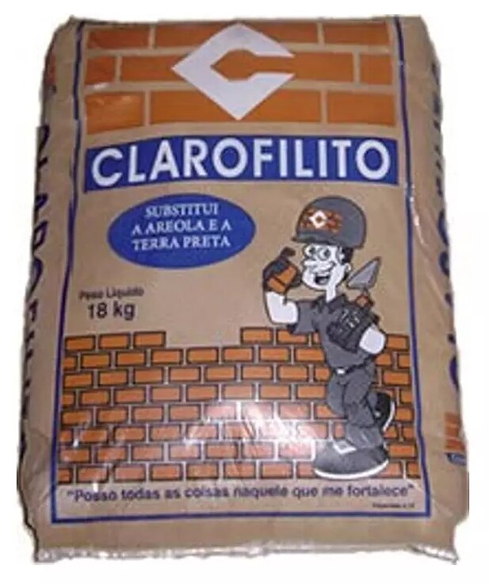
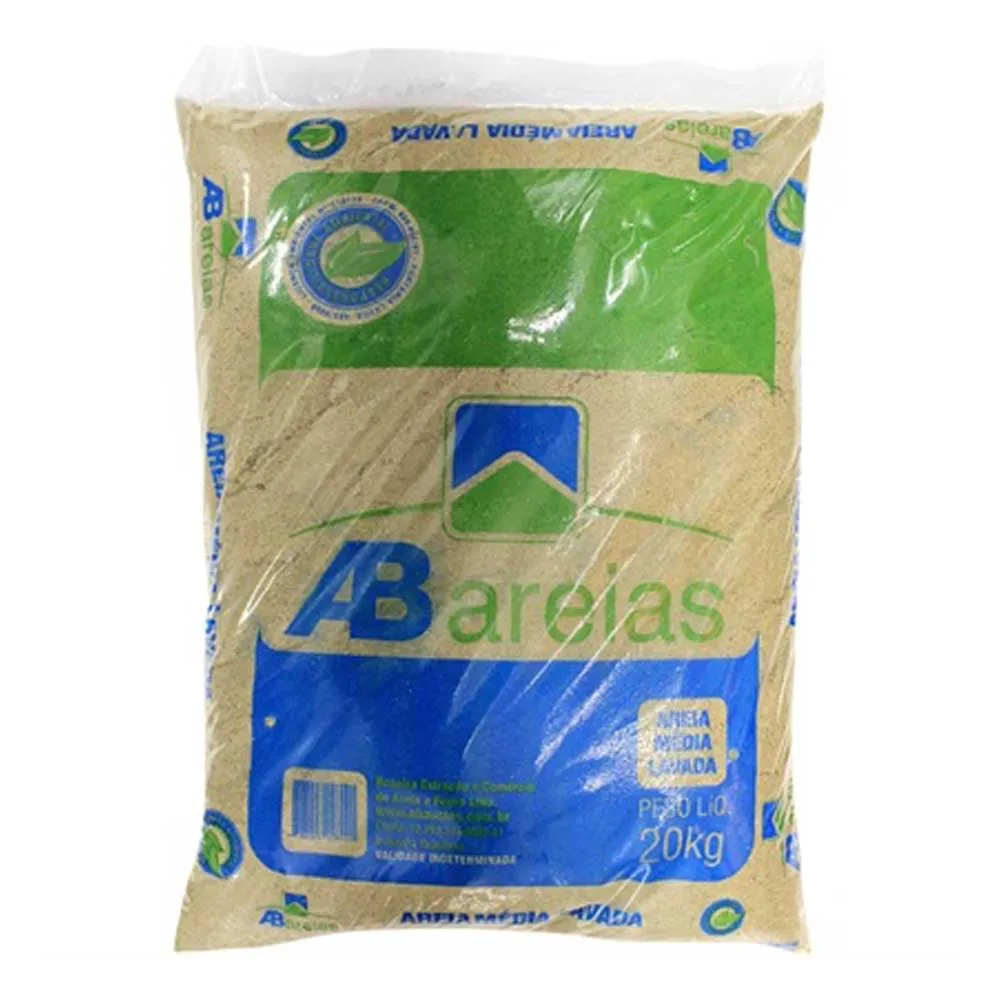
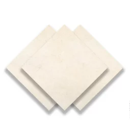
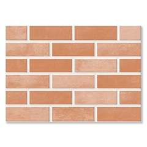

Quem Somos?
Deda Materiais de Construção: Sua Parceira na Construção dos Seus Sonhos
Bem-vindo à Deda Materiais de Construção, o seu
destino completo para todas as necessidades relacionadas à construção e
reforma. Em nossa loja, estamos comprometidos em fornecer produtos
de alta qualidade e um atendimento excepcional para tornar sua experiência de compra única e satisfatória.
Variedade e Qualidade Inigualáveis:
Na Deda, entendemos que cada projeto de construção é único. Por isso, oferecemos uma
ampla variedade de materiais de construção para atender às demandas específicas de cada cliente. Desde materiais
fundamentais como cimento, tijolos e areia até opções de revestimento e decoração, nossa loja é um verdadeiro
paraíso para aqueles que buscam qualidade e diversidade.
Material de Construção
 |
 |
 |
|
|
|
Pisos e Revestimentos
|  |
 |
 |
 |
Ferramentas
 |
 |